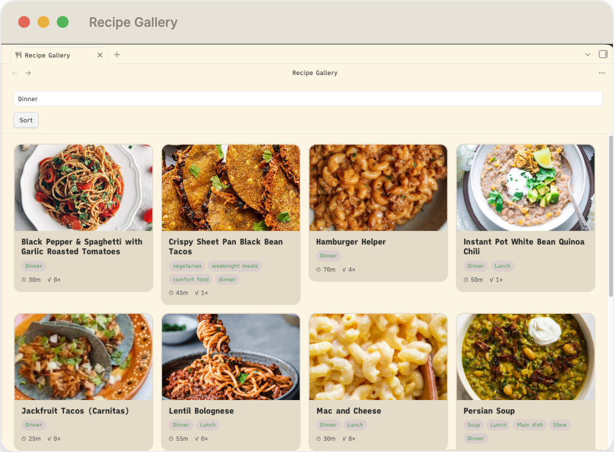
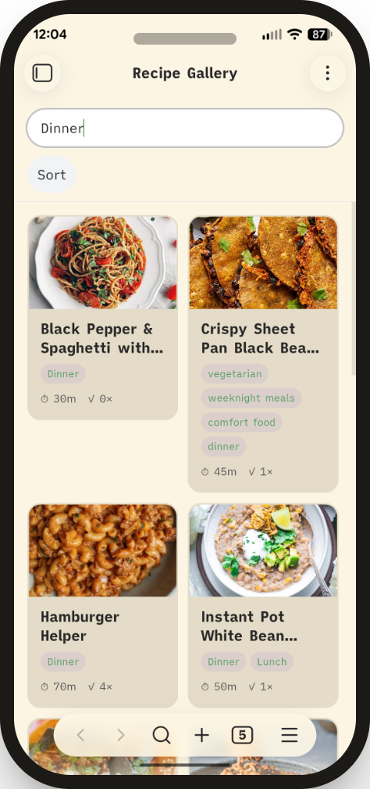
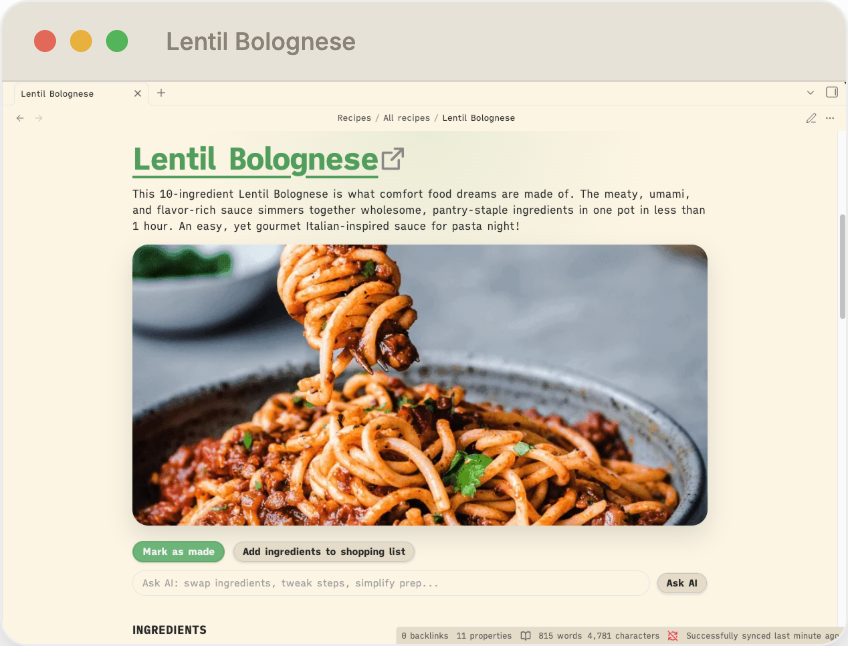
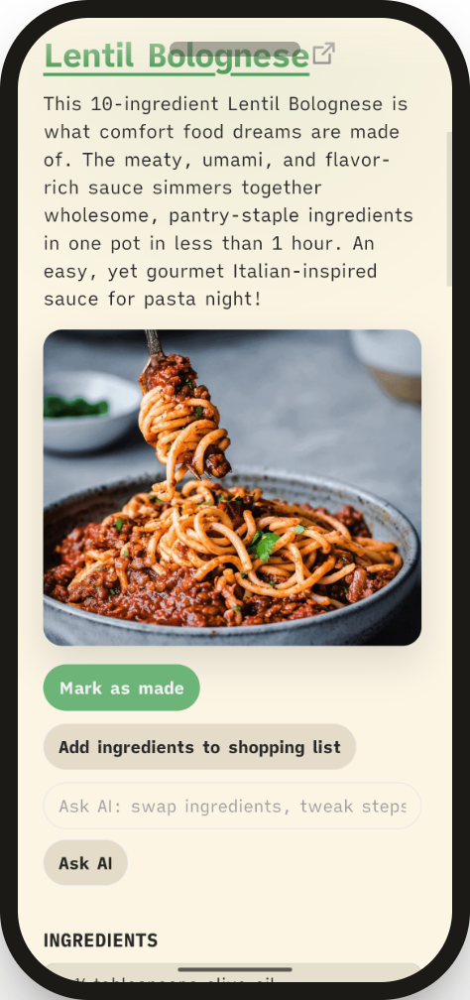
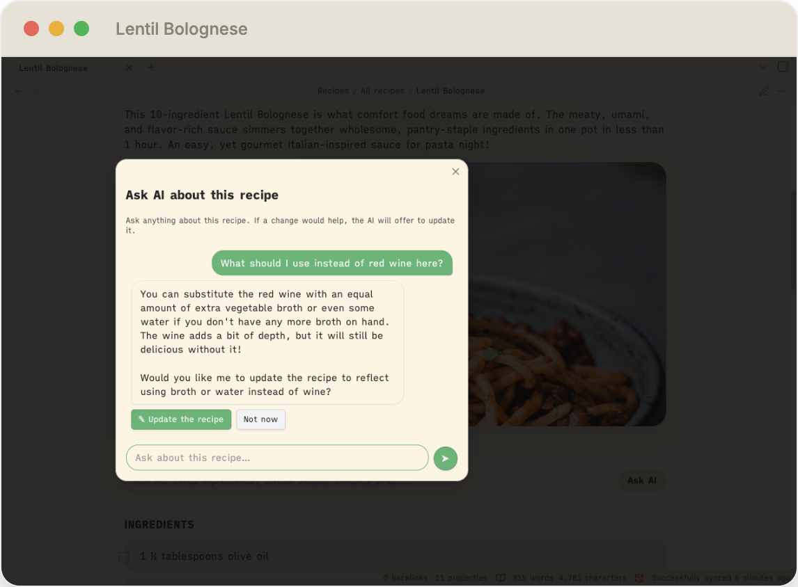
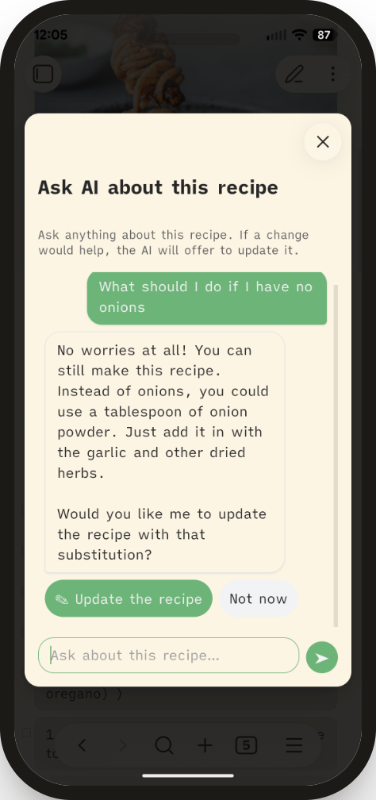
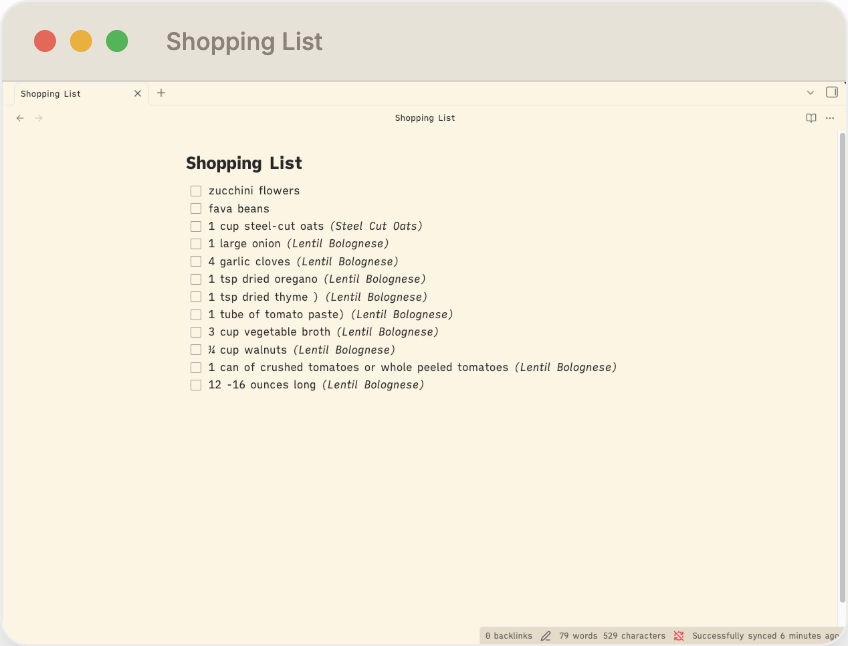
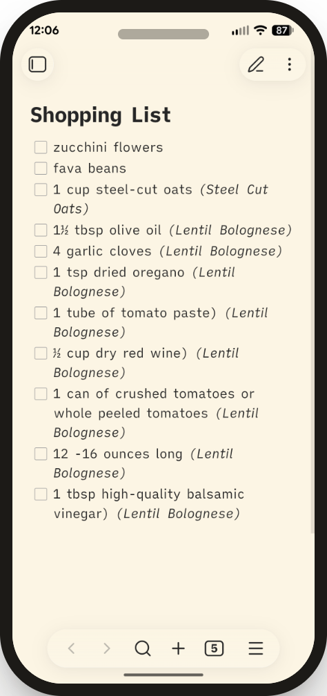
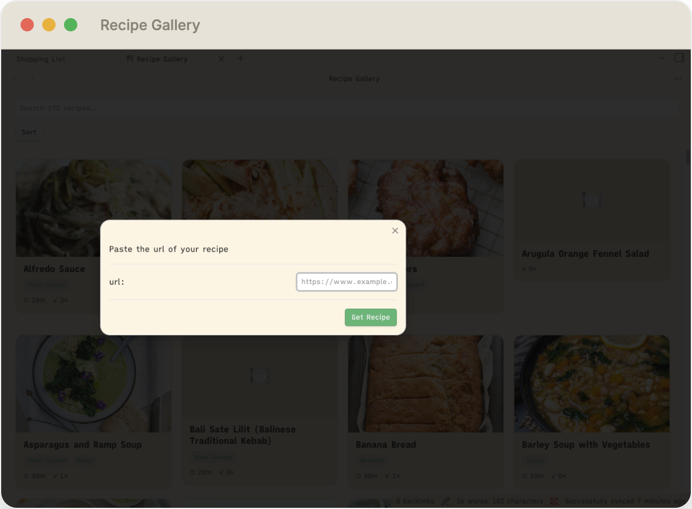
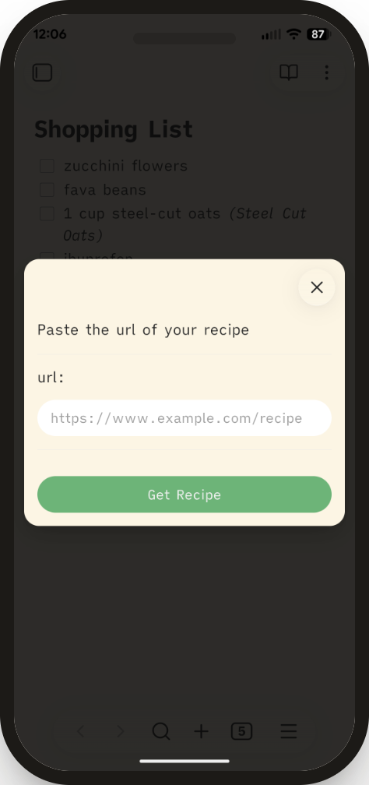

Your recipes, in plain markdown.
Paste a URL, get a clean recipe note. Browse your whole collection in a visual gallery, search by what's already in the fridge, and build a shopping list in one tap, all inside Obsidian. No subscriptions, no accounts, no ads.
Free and open source (MIT) · Works on desktop and mobile.


Every recipe becomes a visual card. Filter by tag, sort, and find tonight's dinner in seconds, on desktop or in your pocket.
A tour of the vault
Five screens you'll actually use
A clean recipe, in plain markdown
Each recipe is an ordinary note with a hero photo, ingredients, and one-tap actions. No lock-in, no subscriptions, yours forever.


Ask AI about any recipe
Swap an ingredient, scale the batch, or simplify the prep, then apply the change straight to your note with a single click.


One tap to your shopping list
Add a recipe's ingredients to a running list that remembers exactly which dish each item came from. Check off as you shop.


Paste a link, get a recipe
Drop in any recipe URL and Recipe Vault saves a clean, ad-free note to your vault. No scrolling past life stories again.


Features
Everything you'd want, none of the subscription
Recipe Vault keeps your collection as ordinary markdown notes in your own vault, so it stays yours, works offline, and syncs however you already sync.
Import from any URL
Reads structured recipe data (JSON-LD) straight off the page and builds a clean note instantly. No ads, no life story about a trip to Tuscany.
Add a recipe from a photo
Photograph a cookbook page and let AI vision transcribe it, with a verify-and-edit step before saving. Multi-page spreads work in one go.
Recipe gallery
Browse your whole collection visually in a dedicated gallery view, with photos, meal types, and cook times at a glance.
Search everything
Filter as you type across titles, meal types, and ingredients, so you can find every recipe that uses what's already in the fridge.
Shopping list
Check off ingredients in a note and send them to a single shopping list file, with units merged automatically.
Compare recipes
Select multiple recipes and view them side by side, with shared and unique ingredients highlighted.
Mark as made
Track when you last made something and how many times, right in the note's frontmatter.
Ask AI for edits
Request changes like "make this dairy-free" or "scale to 2 servings" via OpenRouter. Optional, and it needs your own API key.
Customizable templates
Full Handlebars support, so imported notes come out looking exactly how you want them.
Quick start
From URL to recipe note in about ten seconds
Install the plugin
In Obsidian, open Settings → Community plugins, search for Recipe Vault, then install and enable it.
Paste a recipe URL
Click the chef hat icon in the ribbon (or run Import recipe from the command palette), paste a link, and press Enter.
Cook from your vault
The note lands in your save folder. Click the utensils icon to open the gallery and browse everything you've saved.
Local first
Your recipes don't live on someone else's server
Every recipe is a markdown file in your vault. Nothing is locked in a proprietary format, nothing needs an account, and nothing disappears when a startup gets acquired.
- No telemetry. Recipe Vault collects nothing about you or your vault.
- No accounts, no ads, no subscription. Install it and it works.
- Network use is opt-in and specific. It fetches the recipe pages you ask for; AI features only run with your own OpenRouter key.
- Open source, MIT licensed. Read every line, fork it, or send a pull request.
Start building your cookbook
Free, open source, and already waiting in Obsidian's community plugin directory.
Button not working? You'll need Obsidian installed first.